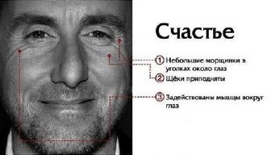
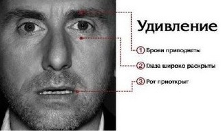
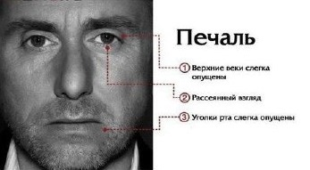
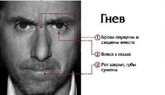
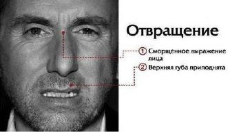
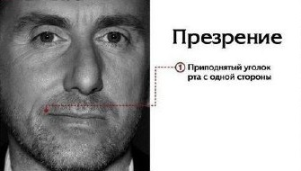
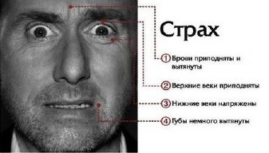

- Эволюционно необходимо, чтобы чувствовать себя частью
общества
- Повышает нашу устойчивость к переживанию неудачи, влияет на
чувство уверенности в себе
-
Укрепляет здоровье

- Самая кратковременная эмоция
- Быстро трансформируется в радость, удовольствие или в страх,
отвращение, гнев.
-
Эмоция-подготовишка

- Помогает замедлиться, сделать выводы
- Помогает увидеть, что было действительно ценно
- Возникает из-за потери того, что было действительно важным для человека - создавало
или подпитывало ощущение полноты жизни наслаждение жизнью

- Необходим для выживания
- Раздражение и гнев чаще всего возникают в ответ на нарушение наших
установок и ценностей
- Страх и гнев – эмоции-соседи

- Внутренний предохранитель для выживания
- Выстраивает социальные границы – свой-чужой
- Временное подавление отвращения создает близкие отношения
между людьми

- Единственная эмоция, которую могут испытывать только люди
по отношению друг к другу
- Основная функция эмоции презрения – подача сигнала об
испытываемом чувстве превосходства
- Презрение - черта незрелой личности

- Несет защитную функцию
- Бывает биологический, социальный и экзистенциальный
- Наши самые большие страхи – это самые потаенные желания
- Страх не равно тревога